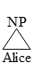
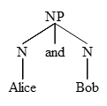
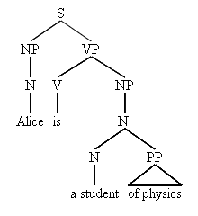

Help
This app has only been tested for Google Chrome. It may or may not work on other browsers.
How to build a tree:
Mark the opening of constituents with an opening square bracket followed immediately by the category of the constituent. Leave a space between the category and anything to follow. If the category name ends with a capital P (e.g. NP, VP), the app will assume that it is a "phrase" node, so it will draw a triangle rather than a line to the content. This app will build the tree as you type and will attempt to close any brackets that you may be missing. You can save the image to your computer by right-clicking on it and selecting "Save image as".
Examples:
[NP Alice]

[NP [N Alice] and [N Bob]]

[S[NP[N Alice]][VP[V is][NP[N'[N a student][PP of physics]]]]]

Movement Lines:
To show movement, mark the head of the movement with an underscore followed by a label, and the tail with the label between angled brackets. Any kind of constituent can be a head, but only leaves can be tails. The head constituent can not be the parent of the tail.